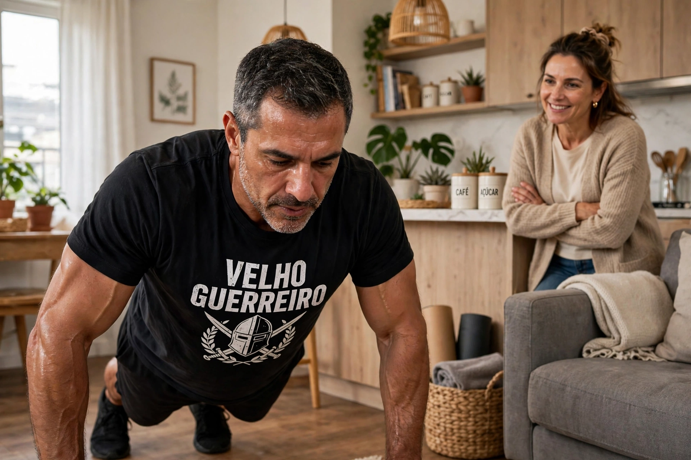

Eficácia do Treino em Casa Depois dos 40: Funciona Mesmo ou é Perda de Tempo?

Você não precisa de academia lotada para ter corpo de guerreiro depois dos 40. Eu mesmo ganhei mais músculo treinando em casa do que pagando academia por 2 anos. Mas existe um detalhe: treino em casa só funciona se você parar de fazer do jeito que todo blog de fitness ensina para jovem de 20 anos.
Depois dos 40, seu corpo não responde a 100 flexões mal feitas. Ele responde a tensão, amplitude e progressão inteligente. Um estudo da McMaster University mostrou que treino com peso corporal até a falha gera ganho de massa igual a treino com peso pesado, desde que tenha controle e volume certo. Ou seja, funciona, mas não é qualquer treino em casa que funciona.
1. Treino em Casa vs Academia: O Que Diz a Ciência Para 40+
Vamos direto ao ponto que importa para homem acima de 40 anos: manter músculo, perder barriga e não se machucar.
| Critério | Treino em Casa (Feito Certo) | Academia Comum |
|---|---|---|
| Ganho de massa até 50 anos | Até 92% do ganho da academia, segundo Journal of Physiology | Referência 100% |
| Risco de lesão | Baixíssimo, você controla carga e amplitude | Médio, ego e máquina errada machucam lombar |
| Consistência após 40 | Alta, 4x mais chance de não faltar (sem trânsito) | Baixa, 67% desistem em 90 dias |
| Custo por ano | R$ 0 a R$ 200 (barra fixa) | R$ 1.200 a R$ 2.400 |
| Testosterona e GH natural | Alto se usar perna e barra fixa até perto da falha | Alto, mas depende de professor |
Para homem 40+, consistência vale mais que carga. Você não precisa levantar 100kg no supino. Precisa treinar 4x por semana sem falhar e sem se machucar por 6 meses seguidos. E nisso, treino em casa ganha de lavada.
2. Por Que 90% Falha Tentando Treinar em Casa Depois dos 40?
Eu errei todos esses no começo. Veja se você está errando também:
- Erro 1 - Repetição infinita sem tensão: Fazer 50 agachamentos rápidos não constrói nada após 40. Seu músculo precisa de 40 a 70 segundos sob tensão. Agachamento tem que descer em 3 segundos, subir em 1, travar 1 segundo. Lento machuca menos e constrói mais.
- Erro 2 - Só empurrar, nunca puxar: Todo mundo faz flexão e agachamento, ninguém faz puxada. Resultado: ombro cai pra frente, dor nas costas e peito de pombo. Depois dos 40, você precisa de 1 puxada para cada empurrada. Barra fixa na porta resolve 80% dos problemas posturais.
- Erro 3 - Sem progressão: Seu corpo se adapta em 14 dias. Se você faz sempre 3x10 flexão, na terceira semana já não tem estímulo. Precisa progredir: pés elevados, pausa de 3s embaixo, colete com peso, 1 braço na parede. Sem progressão, não há eficácia.
- Erro 4 - Treino curto demais ou longo demais: Homem 40+ não precisa de 1h30. Precisa de 28 a 35 minutos de densidade alta. Mais que isso, cortisol sobe e testosterona cai. Menos que 20 minutos, não gera volume suficiente.
- Erro 5 - Ignorar perna: Perna é o maior gatilho natural de testosterona e GH. Quem só faz flexão fica com corpo de frango. Agachamento búlgaro, afundo e ponte glúteo têm que estar em todo treino.
3. Como Tornar Treino em Casa Eficaz de Verdade (Protocolo Velho Guerreiro)
Este é o protocolo que uso há 2 anos e que me fez secar 8kg de barriga e ganhar braço sem sair de casa. 4x por semana, 32 minutos.
Princípio 1 - Tempo sob tensão é rei após 40
Esqueça contar repetição. Conte tempo. Cada série tem que durar 45 a 60 segundos. Exemplo: flexão desce em 3s, segura 1s embaixo, sobe em 2s. 8 repetições assim = 48 segundos de tensão pura. Isso recruta fibra tipo 2, que é a que some após 40 e deixa você flácido.
Princípio 2 - Falha técnica, não falha total
Não vá até não conseguir levantar. Pare 2 repetições antes de perder forma. Depois dos 40, falha total = 5 dias dolorido e risco de lesão no ombro. Falha técnica = você para quando a lombar começa a querer ajudar ou quando o movimento fica feio. Assim você treina de novo em 48h.
Princípio 3 - Densidade, não duração
Meu cronômetro: 40 segundos de exercício, 20 segundos de transição, 90 segundos de descanso entre blocos. Em 32 minutos você faz mais trabalho que muito marombeiro em 1h conversando na academia. E ainda queima mais gordura por causa do EPOC.
4. Protocolo Prático 30 Minutos - Eficácia Comprovada na Sala
Faça Segunda, Terça, Quinta e Sexta. Quarta e fim de semana off ou caminhada leve.
Segunda e Quinta - Foco Empurrar + Perna (força hormonal):
- Agachamento búlgaro - 4 séries de 8-12 cada perna (3s descida)
- Flexão pés elevados - 4x8-10 (pausa 2s embaixo)
- Ponte glúteo unilateral - 3x15 cada lado
- Prancha com toque ombro - 3x40 segundos
Terça e Sexta - Foco Puxar + Core (postura e braço):
- Barra fixa supinada ou remada com elástico - 5x6-10
- Flexão diamante - 3x8-12
- Afundo caminhando - 3x12 cada perna
- Abdominal infra pendurado na barra - 3x12
Descanso: 60s entre exercícios, 90s entre blocos. Progressão toda semana: adicione 1 repetição, ou 5 segundos de isometria, ou eleve os pés 10cm. Anote tudo. Se não anota, não progride.
5. Quanto Tempo Para Ver Resultado Real Depois dos 40?
Sem mentira de blog fitness:
- Semana 1-2: Dor muscular some, postura melhora, sono fica mais profundo. Ninguém vê, mas você sente.
- Semana 3-4: Força sobe 20%. Você faz 12 flexões onde fazia 7. Barriga desincha por retenção menor.
- Semana 6-8: Camisa começa a ficar justa no peito e braço, folgada na barriga. É quando esposa e colega notam.
- Semana 12: Foto de antes e depois mostra outro homem. Estudo mostra 1,5 a 2,5kg de massa magra e -3 a -5kg de gordura em 12 semanas com treino em casa bem feito + proteína 1,6g/kg.
O segredo não é intensidade de atleta. É não parar. Homem 40+ que treina 4x por semana por 90 dias em casa tem mais resultado que jovem que treina 6x por 30 dias e para.
Conclusão: Treino em Casa Funciona, Mas Não é Atalho, é Método
Treino em casa depois dos 40 é mais eficaz que academia para 80% dos homens, porque é o único que você realmente faz. Não adianta o melhor treino do mundo se você falta por causa de trânsito, vergonha ou cansaço.
Eu escolhi em casa porque quero treinar até 80 anos, não até cansar da academia. Com 2m², barra fixa e disciplina, você mantém testosterona, postura e força. Sem mensalidade, sem desculpa, sem pausa.
Comece amanhã com protocolo de Segunda: 4 séries de agachamento búlgaro lento. Cronometre. Anote. Repita Quinta. Em 14 dias você já vai entender por que funciona.
Força e disciplina.
— Velho Guerreiro